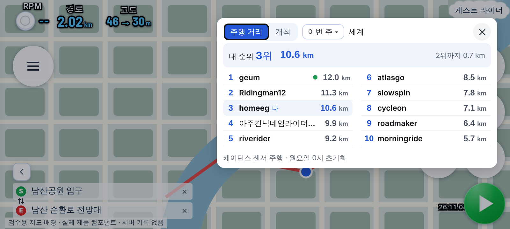
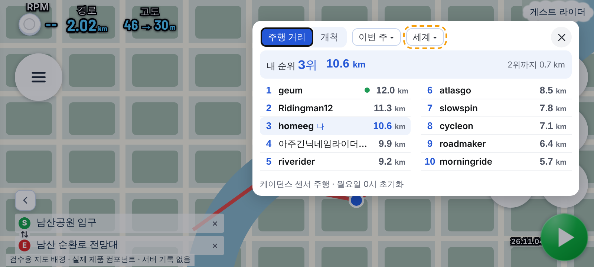
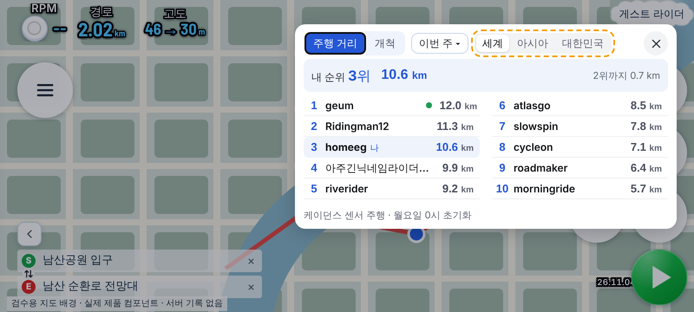

순위 범위 선택 시안 — 폰 가로 800×360 (주황 점선 = 바뀌는 곳, 실제 순위 창 위에 그림)
현재 — 「세계」 글자만범위를 고를 수 없음
A안(추천) — 기간 버튼과 같은 꼴, 누를 때마다 세계 → 아시아 → 대한민국창 크기·줄 수 그대로. 버튼 폭 51~75px. 그림은 「대한민국 ▾」 상태
A안 — 처음 열 때(세계 ▾)개척 탭·국가 없는 사람(게스트 포함)은 ▾ 없이 「세계」 글자만(지금과 같음)
B안 — 세 칸 분할한눈에 보이지만 158px, 닫기 버튼과 37px 남음